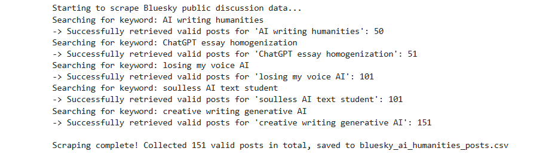

Welcome to zyhut's version
This week I learned two ways to make a website. One is CampusPress, which is a blogging platform. The other is GitHub, where I write the code myself and put it online with GitHub Pages. This site is made the second way. I also learned that HTML is the main content of a website, and CSS is what makes it look the way it does.
This week I used the Web Scraper extension in Chrome to try to get data from BBC iPlayer.
I started with the iPlayer homepage. I made a sitemap and a selector, [class*="carrousel__item"]. It found 106 programme cards (screenshot 1), but when I checked the data preview, there was nothing in it (screenshot 2). I went through the workshop task again and still got no data, so I asked AI for help.
That's when I found out what was wrong. An Element selector only picks out the box around each card. It doesn't take any text, so I had to add a Text selector inside it. That didn't go smoothly either. The page jumped to a programme page, and later the extension lost connection to the tab (screenshots 3 and 4).
So I tried the A–Z page. It was much easier. I only needed one Link selector, and I got a list of programme links (screenshot 5). The page says there are 274 programmes, but my file only has 200 rows.
What I learned is that scraping is easy when the page is a simple list where every item looks the same. A homepage with moving rows and things that load as you scroll is a lot harder.
This week our group chose the first scenario: helping an arts and humanities faculty understand how students use generative AI. We focused on writing, especially the concern that AI might make work more similar and reduce a writer's personal voice.
The hardest part was choosing search terms. Broad queries brought back many different discussions, including material that did not really fit our question. More specific queries sometimes returned very little. We were also still learning how to use Bluesky and Communalytic, so it was difficult to tell whether we needed to change our keywords or how we were using the tools.
This made me realise that collecting data starts before pressing a button. A phrase such as "losing my voice AI" already focuses on a particular concern. Different words can make some experiences easier to find and leave others out. More results do not automatically mean more useful data.
I also need to distinguish posts about students from posts written by students. Public discussion can help us explore the topic, but it cannot automatically represent students' own experiences. If I repeated the task, I would test a small set of results first, record why we changed each query, and include different perspectives. I would also avoid publishing usernames or identifiable quotations.

This week we looked at how to communicate the data collected by our group. Our group document included a collection output, a keyword bar chart, a daily timeline, a sentiment histogram and a word cloud. The output reported 151 records, but that does not tell us how many were unique or written by students.
The keyword chart made our search problem easier to see. Three queries returned 50 records each, while another returned only one. However, the workflow requested up to 50 posts per query. A bar reaching 50 does not show the full amount of discussion, so I cannot treat these counts as a ranking of how popular each topic is.
The word cloud also needs context. Large words such as "writing" and "voice" partly reflect what we searched for. Their size does not tell us whether people support or criticise AI. The sentiment chart has many scores near zero or above it, so it does not support a simple claim that the discussion was mostly negative. I would need to read the posts alongside the automated scores.
For our intended audience, the faculty, I would explain these limits alongside the charts. The results can illustrate public discussion, but they do not prove that AI causes students' writing to become similar. Next time, I would check duplicate records, review relevance and define a clear numerical coding scheme before visualising the data. I learned that a clear-looking chart can still give a misleading impression if the collection process is left unexplained.